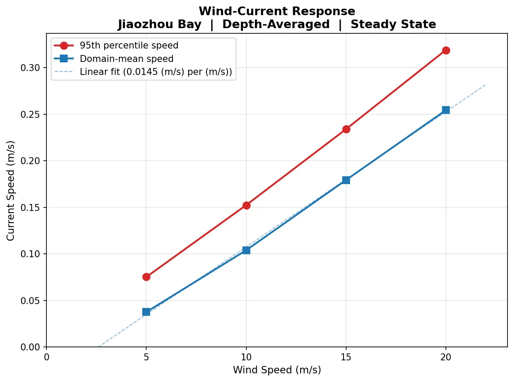

复用课程中的 EFDC 网格信息，构建 Arakawa C-grid 上的水位和速度变量。
Course Training · Independent Implementation
胶州湾风生环流数值实验
围绕 EFDC 网格信息和简化的二维深度平均浅水方程，比较不同南风风速下胶州湾环流的响应。本页聚焦风生流部分。
A course-based circulation experiment using EFDC grid information and an independently implemented depth-averaged Python solver. The study focuses on idealized wind-driven response and qualitative comparison, not on a validated replacement for EFDC.

Context
课程训练最初使用 EFDC 配置胶州湾潮流与风生流。为更直接理解网格、边界条件和求解过程，我进一步基于课程网格信息独立实现了一个简化的二维深度平均浅水方程求解器，并对不同风速工况进行比较。
这个实现是理解数值模式结构的训练，不应被描述成开发了成熟海洋模式，也不能代替 EFDC 的完整三维功能。
Approach
采用线性、深度平均浅水方程，包含风应力、压力梯度、科氏力和底摩擦。
设置无风及不同南风风速，检查稳态流速、方向、水位响应和测站时间演化。
记录稳定性、边界格点、海岸线遮罩和可视化伪影，并在结果解释中保留已知局限。
What was checked
无风工况应保持接近静止；南风条件下流场方向需要与科氏偏转和湾内几何约束保持基本一致；随风速增加，整体流速响应应连续，并在湾口等狭窄区域表现出更强流速。
这些检查主要是物理一致性和定性比较，不等同于与观测完成定量验证。
Limits
- 使用线性二维方程，不含完整三维结构和非线性平流。
- 开边界、水深、底摩擦和风场均有简化。
- 当前重点是风生流；潮汐边界与 EFDC 的定量对照仍可继续完善。
- 不公开课程原始网格、团队资料或任何成员信息。